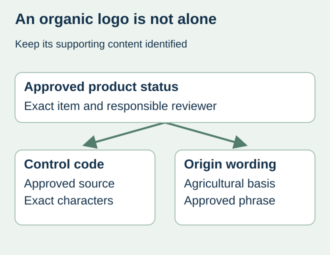
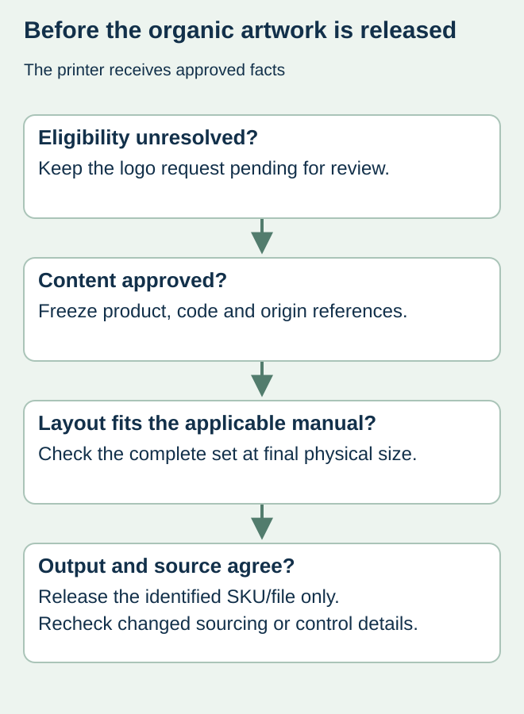

A brand supplies an organic leaf graphic but leaves the neighboring code and origin wording for the printer to complete. A finished-looking proof can then contain a valid-looking symbol beside guessed details. Printing the graphic is only one part of the controlled content set.
Obtain the responsible organic-compliance reviewer’s approved logo, control-body code and agricultural-origin presentation for the exact product. Keep these linked in the artwork record. Do not infer an origin statement from the brand’s address or choose a control code because it appears on another product.


Confirm that the product may carry the logo
The European Commission’s organic-logo guidance explains product eligibility, required accompanying control-body and agricultural-origin information, and presentation rules. It also provides a user manual and official assets. Have the responsible reviewer determine the applicable requirements for the product, market and proposed layout; the presence of an ingredient described as organic does not by itself authorize the logo.
Keep the actual certification and product identity available to that reviewer. The print supplier should receive the resulting approved content, not a request to determine food composition or organic status from a marketing brief. Mark unresolved eligibility or wording as pending before design approval.
Release an information set rather than a loose icon
| Controlled element | Who establishes it | Artwork comparison |
|---|---|---|
| Product eligibility | Responsible operator and organic reviewer | Exact SKU and product version covered |
| Control-body code | Approved product-specific source | Characters match; no copied sample code |
| Agricultural origin | Reviewer-approved wording and basis | Not substituted with company address or packing location |
| Logo asset | Official permitted artwork and presentation | No improvised redrawing or styling |
| Physical layout | Applicable manual and reviewer’s decision | Final-size output preserves the approved relationships |
Country of agricultural production and the location of processing or packing are different concepts. Ask the reviewer for the authorized origin wording and retain its basis. A designer should not resolve a mixed-origin question by selecting the shortest phrase that fits the panel.


Check the actual size and language version
Plan space for the full approved set before committing to a tiny lid or front label. Review the current official manual for the actual permitted dimensions, colors and presentation. This article supplies no alternative size allowance or exemption. If the available area conflicts with the requirement, return the layout choice to the reviewer and packaging owner.
For a hypothetical multi-origin food range, the brand may share a decorative front design while each product needs its own approved supporting details. Locking all SKUs to a single code-and-origin block without review can carry one product’s content into another. Track any permitted shared elements explicitly rather than copying an entire block by habit.
Recheck when the approved facts change
Ask whether a changed sourcing arrangement, product, certifying body or market affects the approved content. Preserve the old and new approval references and identify which active label files are affected. A printer’s unchanged plate or PDF is not evidence that the underlying status stayed unchanged.
Use the multilingual approval guide to trace accepted wording to each export, and the layout-capacity guide if the complete information set does not fit. Organic approval remains with the responsible parties; print approval records what their accepted content becomes on the actual label.
Discuss the unresolved label requirement
Provide the certified product reference, intended market, responsible reviewer’s approved logo/code/origin set, physical label dimensions and artwork revision. We confirm printing scope rather than certify organic status. Prepare a label specification inquiry. The contact page opens an email draft and lists email or WhatsApp for attachments. Supply, proof options, testing, pricing and timing require project confirmation.